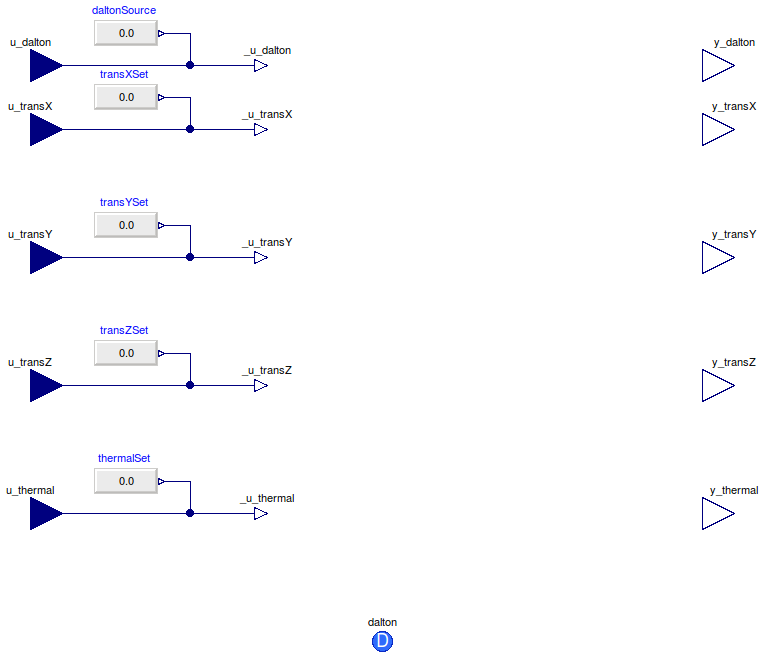
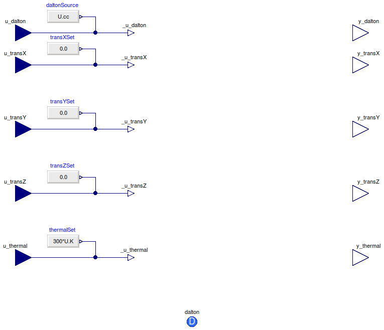

Table of Contents
- User's Guide
- Blocks
- Conditions
- Assemblies
- Regions
- Subregions
- Phases
- Species
- Connectors
- Characteristics
- Units
- Quantities
- Utilities
- Icons
Download
- Latest version (**Empty; please check back soon or contact kdavies4 at gmail.com.)

| Name | Description |
|---|---|
| DaltonFlows | Condition for an Dalton connector, with flow variables specified by default |
| DaltonEfforts | Condition for a Dalton connector, with effort variables specified by default |
| Conditions for additivity of volume | |
| Translational conditions | |
| Thermal conditions |

| Type | Name | Default | Description |
|---|---|---|---|
| Specification | |||
| Additivity of pressure | |||
| Boolean | internalDalton | true | Use internal specification |
| RealExpression | daltonSource | redeclare Sources.RealExpres… | Source of internal specification |
| X-axis translational | |||
| Boolean | internalTransX | true | Use internal specification |
| RealExpression | transXSet | redeclare Sources.RealExpres… | Source of internal specification |
| Y-axis translational | |||
| Boolean | internalTransY | true | Use internal specification |
| RealExpression | transYSet | redeclare Sources.RealExpres… | Source of internal specification |
| Z-axis translational | |||
| Boolean | internalTransZ | true | Use internal specification |
| RealExpression | transZSet | redeclare Sources.RealExpres… | Source of internal specification |
| Thermal | |||
| Boolean | internalThermal | true | Use internal specification |
| RealExpression | thermalSet | redeclare Sources.RealExpres… | Source of internal specification |
| Assumptions | |||
| Axes with translational momentum included | |||
| Boolean | inclTransX | true | X |
| Boolean | inclTransY | true | Y |
| Boolean | inclTransZ | true | Z |
| Type | Name | Description |
|---|---|---|
| Dalton | dalton | Connector to exchange translational momentum and thermal energy by diffusion |
| input RealInput | u_dalton | Additivity of pressure specification |
| input RealInput | u_transX | X-axis translational specification |
| input RealInput | u_transY | Y-axis translational specification |
| input RealInput | u_transZ | Z-axis translational specification |
| input RealInput | u_thermal | Thermal specification |
| Measurement | ||
| output RealOutput | y_transX | X-axis translational measurement |
| output RealOutput | y_transY | Y-axis translational measurement |
| output RealOutput | y_transZ | Z-axis translational measurement |
| output RealOutput | y_thermal | Thermal measurement |
| Measurement | ||
| output RealOutput | y_dalton | Additivity of pressure measurement |
model DaltonFlows "Condition for an Dalton connector, with flow variables specified by default" import FCSys.Utilities.countTrue; import FCSys.Utilities.enumerate; import Modelica.Blocks.Sources; extends FCSys.Icons.Conditions.Single; // Specification // ------------- // Additivity of pressure replaceable function daltonSpec = Dalton.pressure constrainedby Dalton.PartialCondition "Quantity"; parameter Boolean internalDalton=true "Use internal specification"; replaceable Sources.RealExpression daltonSource if internalDalton constrainedby Modelica.Blocks.Interfaces.SO "Source of internal specification"; // // X-axis translational replaceable function transXSpec = Translational.force constrainedby Translational.PartialCondition "Quantity"; parameter Boolean internalTransX=true if inclTransX "Use internal specification"; replaceable Sources.RealExpression transXSet if inclTransX and internalTransX constrainedby Modelica.Blocks.Interfaces.SO "Source of internal specification"; // // Y-axis translational replaceable function transYSpec = Translational.force constrainedby Translational.PartialCondition "Quantity"; parameter Boolean internalTransY=true if inclTransY "Use internal specification"; replaceable Sources.RealExpression transYSet if inclTransY and internalTransY constrainedby Modelica.Blocks.Interfaces.SO "Source of internal specification"; // // Z-axis translational replaceable function transZSpec = Translational.force constrainedby Translational.PartialCondition "Quantity"; parameter Boolean internalTransZ=true if inclTransZ "Use internal specification"; replaceable Sources.RealExpression transZSet if inclTransZ and internalTransZ constrainedby Modelica.Blocks.Interfaces.SO "Source of internal specification"; // // Thermal replaceable function thermalSpec = Thermal.heatRate constrainedby Thermal.PartialCondition "Quantity"; parameter Boolean internalThermal=true "Use internal specification"; replaceable Sources.RealExpression thermalSet if internalThermal constrainedby Modelica.Blocks.Interfaces.SO "Source of internal specification"; // Measurement // ----------- // Material replaceable function daltonMeas = Dalton.volume constrainedby Dalton.PartialCondition "Additivity of pressure quantity"; // X-axis translational replaceable function transXMeas = FCSys.Conditions.ByConnector.Dalton.Translational.velocity constrainedby Translational.PartialCondition "X-axis translational quantity"; // Y-axis translational replaceable function transYMeas = FCSys.Conditions.ByConnector.Dalton.Translational.velocity constrainedby Translational.PartialCondition "Y-axis translational quantity"; // Z-axis translational replaceable function transZMeas = FCSys.Conditions.ByConnector.Dalton.Translational.velocity constrainedby Translational.PartialCondition "Z-axis translational quantity"; // Thermal replaceable function thermalMeas = FCSys.Conditions.ByConnector.Dalton.Thermal.temperature constrainedby Thermal.PartialCondition "Thermal quantity"; // Included components of translational momentum parameter Boolean inclTransX=true "X"; parameter Boolean inclTransY=true "Y"; parameter Boolean inclTransZ=true "Z"; FCSys.Connectors.Dalton dalton(final n_trans=n_trans) "Connector to exchange translational momentum and thermal energy by diffusion"; // Inputs Connectors.RealInput u_dalton if not internalDalton "Additivity of pressure specification"; Connectors.RealInput u_transX if inclTransX and not internalTransX "X-axis translational specification"; Connectors.RealInput u_transY if inclTransY and not internalTransY "Y-axis translational specification"; Connectors.RealInput u_transZ if inclTransZ and not internalTransZ "Z-axis translational specification"; Connectors.RealInput u_thermal if not internalThermal "Thermal specification"; // Outputs final Connectors.RealOutput y_dalton=daltonMeas( dalton.V, dalton.p, dalton.phi, dalton.mPhidot, dalton.T, dalton.Qdot) "Additivity of pressure measurement"; final Connectors.RealOutput y_transX=transXMeas( dalton.V, dalton.p, dalton.phi, dalton.mPhidot, dalton.T, dalton.Qdot, i=transCart[Axis.x]) if inclTransX "X-axis translational measurement"; final Connectors.RealOutput y_transY=transYMeas( dalton.V, dalton.p, dalton.phi, dalton.mPhidot, dalton.T, dalton.Qdot, i=transCart[Axis.y]) if inclTransY "Y-axis translational measurement"; final Connectors.RealOutput y_transZ=transZMeas( dalton.V, dalton.p, dalton.phi, dalton.mPhidot, dalton.T, dalton.Qdot, i=transCart[Axis.z]) if inclTransZ "Z-axis translational measurement"; final Connectors.RealOutput y_thermal=thermalMeas( dalton.V, dalton.p, dalton.phi, dalton.mPhidot, dalton.T, dalton.Qdot) "Thermal measurement"; protected final inner parameter Integer n_trans=countTrue({inclTransX,inclTransY, inclTransZ}) "Number of components of translational momentum"; final inner parameter Integer transCart[Axis]=enumerate({inclTransX, inclTransY,inclTransZ}) "Translational-momentum-component indices of the Cartesian axes"; Connectors.RealOutputInternal _u_dalton=daltonSpec( dalton.V, dalton.p, dalton.phi, dalton.mPhidot, dalton.T, dalton.Qdot) "Internal, working value of dalton specification"; Connectors.RealOutputInternal _u_transX=transXSpec( dalton.V, dalton.p, dalton.phi, dalton.mPhidot, dalton.T, dalton.Qdot, i=transCart[Axis.x]) if inclTransX "Internal, working value of X-axis translational specification"; Connectors.RealOutputInternal _u_transY=transYSpec( dalton.V, dalton.p, dalton.phi, dalton.mPhidot, dalton.T, dalton.Qdot, i=transCart[Axis.y]) if inclTransY "Internal, working value of Y-axis translational specification"; Connectors.RealOutputInternal _u_transZ=transZSpec( dalton.V, dalton.p, dalton.phi, dalton.mPhidot, dalton.T, dalton.Qdot, i=transCart[Axis.z]) if inclTransZ "Internal, working value of Z-axis translational specification"; Connectors.RealOutputInternal _u_thermal=thermalSpec( dalton.V, dalton.p, dalton.phi, dalton.mPhidot, dalton.T, dalton.Qdot) "Internal, working value of thermal specification"; equation // Dalton connect(u_dalton, _u_dalton); connect(daltonSource.y, _u_dalton); // X-axis translational connect(u_transX, _u_transX); connect(transXSet.y, _u_transX); // Y-axis translational connect(u_transY, _u_transY); connect(transYSet.y, _u_transY); // Z-axis translational connect(u_transZ, _u_transZ); connect(transZSet.y, _u_transZ); // Thermal connect(u_thermal, _u_thermal); connect(thermalSet.y, _u_thermal); end DaltonFlows;

| Type | Name | Default | Description |
|---|---|---|---|
| Specification | |||
| Additivity of pressure | |||
| replaceable function daltonSpec | Dalton.volume | Quantity | |
| Boolean | internalDalton | true | Use internal specification |
| X-axis translational | |||
| replaceable function transXSpec | Translational.velocity | Quantity | |
| Boolean | internalTransX | true | Use internal specification |
| RealExpression | transXSet | redeclare Sources.RealExpres… | Source of internal specification |
| Y-axis translational | |||
| replaceable function transYSpec | Translational.velocity | Quantity | |
| Boolean | internalTransY | true | Use internal specification |
| RealExpression | transYSet | redeclare Sources.RealExpres… | Source of internal specification |
| Z-axis translational | |||
| replaceable function transZSpec | Translational.velocity | Quantity | |
| Boolean | internalTransZ | true | Use internal specification |
| RealExpression | transZSet | redeclare Sources.RealExpres… | Source of internal specification |
| Thermal | |||
| replaceable function thermalSpec | Thermal.temperature | Quantity | |
| Boolean | internalThermal | true | Use internal specification |
| Measurement | |||
| replaceable function daltonMeas | Dalton.pressure | Additivity of pressure quantity | |
| replaceable function transXMeas | velocity | X-axis translational quantity | |
| replaceable function transYMeas | velocity | Y-axis translational quantity | |
| replaceable function transZMeas | velocity | Z-axis translational quantity | |
| replaceable function thermalMeas | temperature | Thermal quantity | |
| Assumptions | |||
| Axes with translational momentum included | |||
| Boolean | inclTransX | true | X |
| Boolean | inclTransY | true | Y |
| Boolean | inclTransZ | true | Z |
| Type | Name | Description |
|---|---|---|
| Dalton | dalton | Connector to exchange translational momentum and thermal energy by diffusion |
| input RealInput | u_dalton | Additivity of pressure specification |
| input RealInput | u_transX | X-axis translational specification |
| input RealInput | u_transY | Y-axis translational specification |
| input RealInput | u_transZ | Z-axis translational specification |
| input RealInput | u_thermal | Thermal specification |
| Measurement | ||
| output RealOutput | y_transX | X-axis translational measurement |
| output RealOutput | y_transY | Y-axis translational measurement |
| output RealOutput | y_transZ | Z-axis translational measurement |
| output RealOutput | y_thermal | Thermal measurement |
| Specification | ||
| Additivity of pressure | ||
| replaceable function daltonSpec | Quantity | |
| X-axis translational | ||
| replaceable function transXSpec | Quantity | |
| Y-axis translational | ||
| replaceable function transYSpec | Quantity | |
| Z-axis translational | ||
| replaceable function transZSpec | Quantity | |
| Thermal | ||
| replaceable function thermalSpec | Quantity | |
| Measurement | ||
| replaceable function daltonMeas | Additivity of pressure quantity | |
| replaceable function transXMeas | X-axis translational quantity | |
| replaceable function transYMeas | Y-axis translational quantity | |
| replaceable function transZMeas | Z-axis translational quantity | |
| replaceable function thermalMeas | Thermal quantity | |
| output RealOutput | y_dalton | Additivity of pressure measurement |
model DaltonEfforts "Condition for a Dalton connector, with effort variables specified by default" extends FCSys.Conditions.ByConnector.Dalton.DaltonFlows( redeclare replaceable function daltonSpec = Dalton.volume, redeclare replaceable function transXSpec = Translational.velocity, redeclare replaceable function transYSpec = Translational.velocity, redeclare replaceable function transZSpec = Translational.velocity, redeclare replaceable function thermalSpec = Thermal.temperature, redeclare replaceable function daltonMeas = Dalton.pressure, redeclare replaceable function transXMeas = Translational.force, redeclare replaceable function transYMeas = Translational.force, redeclare replaceable function transZMeas = Translational.force, redeclare replaceable function thermalMeas = Thermal.heatRate, redeclare Modelica.Blocks.Sources.RealExpression daltonSource(y=U.cc), redeclare Modelica.Blocks.Sources.RealExpression thermalSet(y=300*U.K)); // See note in ElectrochemEfforts. // The daltonSource and thermalSet blocks are redeclared as not replaceable // because y is set directly and cannot be undone at instantiation. end DaltonEfforts;